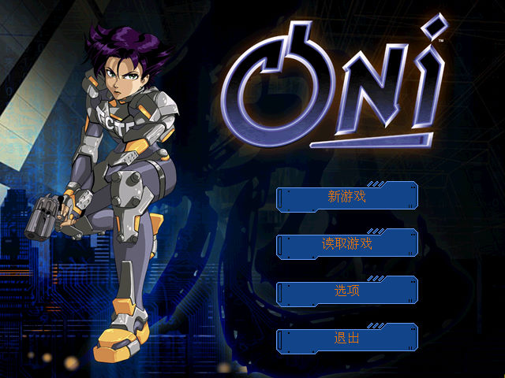
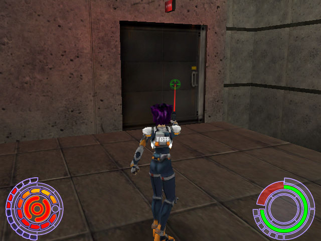

名稱：鬼妮／奧妮 (Oni，繁中／簡中／英文版)
簡介：Bungie 2001年出品的第三人稱射擊遊戲，由Take 2代理發行。台灣由協和繁中化並代
理發行，大陸由世紀雷神簡中化並代理發行 [待補]。


備註：本版缺繁中光碟
保護：英文版無保護，簡中版為光碟，破解碼：
oni.exe
75 39 88 44
EB -- -- --
備註：簡中版為1.7版。
備註：簡中版因漢化程式的相容性問題，目前找不到可正常執行的系統。PCem/86Box+Win98
是唯一可執行的系統，但滑鼠會極度卡頓。建議玩英文版。
備註：英文版比簡中版多了幾個level的資料檔，原因與作用不明。